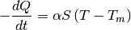
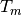

wastebot.heatbed.simulation package¶
Submodules¶
wastebot.heatbed.simulation.heatbed module¶
Module for imprementing the virtual heatbed.
-
class
wastebot.heatbed.simulation.heatbed.Heatbed(init_tmp, capacity, surf_area, init_power, max_power)¶ Bases:
objectVirtual heatbed class.
The instance of this class represents a virtual heatbed. This instance reads the input power and calculated the temperature every time. In this calculation, this class uses the Newton’s law of cooling to estimate the heat loss amount.
In addition, this class can be called from wastebot.heatbed.simulation module. (Please see the “Examples” section for details.)
Parameters: - init_tmp (int or float) – The initial temperature of the virtual heatbed (unit: °C).
- capacity (int or float) – The heat capacity of the virtual heatbed (unit: J/K).
- surf_area (int ot float) – The surface area of the virtual heatbed (unit: m^2).
- init_power (int ot float) – The initail input power of the virtual heatbed (unit: W). You must set the value within the range (0, max_power]. Otherwise, this class throw ValueError.
- max_power (int ot float) – The max input power of the virtual heatbed (unit: W).
Examples
>>> from wastebot.heatbed.simulation import Heatbed
Note
Newton’s law of cooling

Note that
 represents the time.
represents the time. is the thermal energy in the solid (unit: joule).
is the thermal energy in the solid (unit: joule). is the heat transfer coefficient of the medium (unit: W/(m^2 * K).
is the heat transfer coefficient of the medium (unit: W/(m^2 * K). is the surface area of the solid.
is the surface area of the solid. is the temperature of the the solid (unit: K).
is the temperature of the the solid (unit: K).-  is the temperature of the medium (unit: K).
-
capacity¶ The heat capacity of the virtual heatbed. (unit – J/K)
-
classmethod
judge_power(power, max_power)¶ This function judge which the “power” is within the range (0, max_power] or not. If the “power” is within this range, this function returns True. If the “power” isn’t within this range, this function returns False.
Returns: result – The result of the judgement. Return type: bool
-
max_power¶ The max input power of heatbed. (unit – W)
-
power¶ Present input power of ths virtual heatbed. (unit – W)
If you want to change this value, you must set the value within the range (0, max_power]. Otherwise, this instance throw ValueError.
-
surf_area¶ The surf area of the virtual heatbed. (unit – m^2)
-
tmp¶ Present temperature of the virtual heatbed (unit – °C).
-
update_tmp(duration, medium_tmp, medium_htc)¶ This function updates the temprature of the virtual heatbed. This function uses the Newton’s law of cooling to estimate the heat loss amount.
Parameters: - duration (int or float) – The reciprocal of the sampling frequency. (unit: sec)
- medium_tmp (int or float) – The temperature of the medium. (ex. the air in the room, unit: °C)
- medium_htc (int or float) – Heat transfer coefficient of the medium. (ex. the air in the room, unit: W/(m^2 * K))